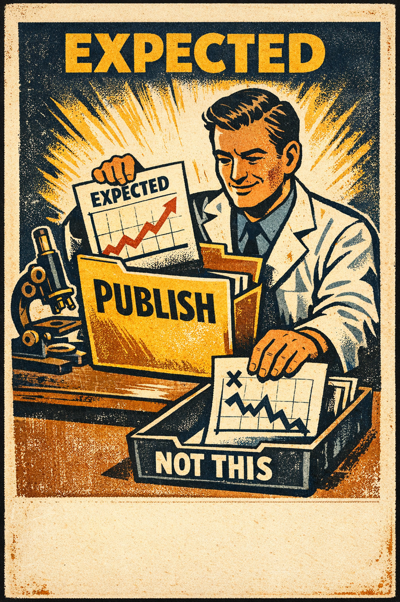
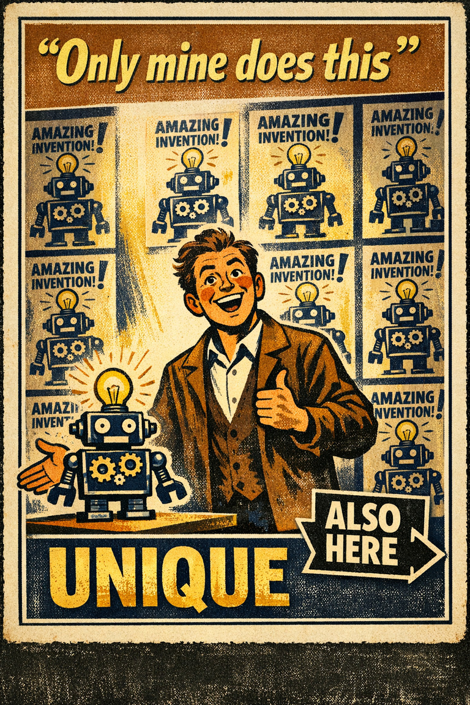

Everyday life
In everyday life, this often looks like people leaning on the easiest first interpretation when situations where causal attribution is already difficult and the self-perspective cue feels easier to trust than a fuller review..

Cognitive Biases
A practical cognitive-bias site with clear definitions, learning paths, assessments, self-audits, and debiasing tools.
Cognitive Bias
The tendency to avoid acknowledgment of an obviously bad situation to avoid the bad feelings that may come with acknowledgment of the situation
What it distorts
Biases that bend explanations about why events happened and who or what caused them.
Typical trigger
Situations where causal attribution is already difficult and the self-perspective cue feels easier to trust than a fuller review.
First countermove
Start with the causal attribution question instead of the first intuitive answer, then check whether the self-perspective pattern is doing invisible work.
Best use
Quick reference
What story about cause, blame, or intention feels satisfying here that may be outpacing the evidence?
In causal attribution problems, the bias intensifies when ego, identity, ownership, or asymmetry between self and others enters the picture before a fuller check catches up.
Use the quick check and reflection questions before locking the label. Nearby entries often share the same outer appearance while differing in what actually drives the distortion.
Each example changes the surface context while keeping the same hidden distortion in place.
In everyday life, this often looks like people leaning on the easiest first interpretation when situations where causal attribution is already difficult and the self-perspective cue feels easier to trust than a fuller review..
At work, this often appears when teams treat the first coherent story as sufficient instead of slowing the process long enough to compare alternatives.
In public discourse, it often surfaces when commentators move too quickly from salience to conclusion while the underlying evidence remains thinner than it sounds.
The distortion usually feels like ordinary good judgment from the inside, which is why procedural repairs matter more than mere recognition.
Teaching note: Start with the causal Attribution problem, then show how the self-Perspective pattern makes the distortion feel natural from the inside.
The strongest debiasing moves change the process, not just the label.
Start with the causal attribution question instead of the first intuitive answer, then check whether the self-perspective pattern is doing invisible work.
Ask someone else to restate the case from a genuinely different starting point before committing.
Change the workflow so this distortion becomes harder to repeat by default next time.
Practice And Repair
Follow the moment where the bias first becomes attractive, then track how that attraction turns into a distorted judgment before jumping straight to the label.
Situations where causal attribution is already difficult and the self-perspective cue feels easier to trust than a fuller review.
The first coherent reading starts to feel like ordinary good judgment from the inside.
Biases that bend explanations about why events happened and who or what caused them.
Start with the causal attribution question instead of the first intuitive answer, then check whether the self-perspective pattern is doing invisible work.
What story about cause, blame, or intention feels satisfying here that may be outpacing the evidence?
Spot It
Slow It
Reframe It
These are nearby labels that can share the same outer appearance while differing in what actually drives the distortion. Use the overlap, the distinction, and the diagnostic question together before settling the call.
Why compare it: A nearby label worth comparing before settling the diagnosis.
Why compare it: A nearby label worth comparing before settling the diagnosis.
Why compare it: A nearby label worth comparing before settling the diagnosis.
These are useful when the label seems roughly right but the process change still feels underspecified.
What story about cause, blame, or intention feels satisfying here that may be outpacing the evidence?
What changes in this judgment when the person involved is me, my group, or someone I already identify with?
What evidence or comparison would most seriously change the current call?
These sourced cases come from closely related biases and help show the same kind of pressure while a direct case for this page catches up.
Everyday workplace trait inflation
Ordinary judgments about lateness, bluntness, or hesitation often drift from local pressures into character verdicts very quickly.
Why it fits: The person gets treated as the whole explanation before the setting gets its share.
Related through: Fundamental attribution error
Overview source
Household and group-task contribution estimates
Egocentric bias is classically taught through joint projects and household labor, where each participant recalls their own contribution more readily and therefore estimates it as larger than others do.
Why it fits: Availability from the first-person seat is being mistaken for objective proportion.
Related through: Egocentric bias
Cambridge chapter · 1982
These neighbors were selected from shared categories, shared patterns, and explicit editorial links where available.

The tendency to attribute more blame for a mishap to the person or persons involved if they are perceived as dissimilar to the person making that judgment.

The tendency to remember the past in self-serving ways and overweight one's own perspective.

The tendency for researchers' expectations to shape what data they notice, trust, publish, or discount.

The tendency of people to see their projects and themselves as more singular than they actually are.

The tendency to explain other people's behavior too quickly in terms of character while underweighting situational pressures and constraints.

The tendency to favor, trust, defend, or positively interpret people and claims associated with one's own group more readily than comparable outsiders.